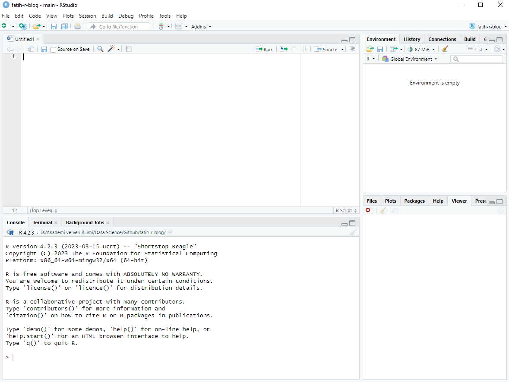

R Programlama Hakkında
R programlama, veri analizi, istatistiksel ve ekonometrik hesaplamalar, veri görselleştirme ve veri madenciliği gibi istatistiksel ve veri analitiği işlemleri için kullanılan bir programlama dilidir. İlk olarak 1990 yılında Ross Ihaka ve Robert Gentleman tarafından geliştirilmeye başlanmıştır ve o zamandan bu yana istatistiksel analiz alanında çok popüler bir araç haline gelmiştir. Yazılım ismini yazarların isimlerinin baş harflerinden almaktadır.
R Programı ile Neler Yapılabilir
R, açık kaynaklı bir programlama dili ve yazılım ortamıdır, bu da onu geniş bir kullanıcı topluluğu tarafından desteklenen ve geliştirilen bir platform yapar. R ile yapılabilecek başlıca işler şunlardır:
Veri Analizi: R, veri çerçeveleri ve veri setleri üzerinde işlem yapmak için bir dizi fonksiyon ve araç sunar. Veri temizleme, dönüştürme, özeti alma ve analiz etme işlemleri R ile kolayca gerçekleştirilebilir.
Veri Görselleştirme: R, ggplot2 gibi grafik paketleri ile verilerinizi görselleştirmenize olanak tanır. Çeşitli grafik türleri (çizgi grafikleri, sütun grafikleri, dağılım grafikleri vb.) oluşturabilirsiniz.
İstatistiksel Analiz: R, istatistiksel modelleri oluşturmak, hipotez testleri yapmak ve regresyon analizi gibi istatistiksel analizler gerçekleştirmek için zengin bir araç seti sunar. Ayrıca zaman serisi analizi ve kümeleme gibi konularda da kullanılır.
Veri Madenciliği: R, veri madenciliği uygulamaları için kullanılabilir. Makine öğrenimi algoritmaları uygulamak ve veri madenciliği projeleri geliştirmek için paketler içerir.
Raporlama: R Markdown kullanarak veri analizi ve sonuçlarını raporlama için kullanılır. Bu, anlamlı ve formatlı raporlar oluşturmanıza yardımcı olur.
Paketler ve Genişletilebilirlik: R, kullanıcıların işlevselliği genişletmek için paketler ekleyebileceği bir sistem sunar. CRAN (Comprehensive R Archive Network) gibi kaynaklar, binlerce paketi içeren bir depo sağlar.
R programlama özellikle istatistik, veri bilimi ve akademik araştırmalar alanlarında çok kullanılır, ancak endüstriyel uygulamalarda da giderek daha fazla kullanılmaktadır. R’nin açık kaynaklı olması ve geniş bir kullanıcı topluluğuna sahip olması, bu dilin popülerliğini artırmıştır. R ile çalışmak için temel programlama bilgisine sahip olmak yararlı olacaktır, ancak öğrenmesi oldukça erişilebilir bir dildir ve çevrimiçi kaynaklar ve kurslar mevcuttur.
R Programlama ile ilgili Faydalı Kaynaklar
R programlamayı öğrenmek ve geliştirmek için bir dizi faydalı kaynak bulunmaktadır. R programlamaya başlamak veya ilerlemek için kullanabileceğiniz bazı kaynaklar:
Resmi R Web Sitesi: R’nin resmi web sitesi (https://www.r-project.org/) R programlamaya başlamak için temel kaynaktır. Burada R’nin indirilmesi, kurulumu ve temel belgelendirme bilgilerine erişebilirsiniz.
RStudio: R programlama için yaygın olarak kullanılan RStudio IDE’si (Entegre Geliştirme Ortamı), R kodlarını yazmak, çalıştırmak ve yönetmek için güçlü bir araçtır. RStudio’nun resmi web sitesi (https://www.rstudio.com/) RStudio’nun indirilmesi ve kullanımı hakkında bilgi sunar.
R Dersleri ve Kurslar: İnternette birçok ücretsiz R dersi ve kursu bulabilirsiniz. Coursera, edX, Udemy ve DataCamp gibi platformlar, R programlamayı öğrenmek için çeşitli kurslar sunmaktadır.
R Belgeleri: R’nin resmi belgeleme (https://cran.r-project.org/manuals.html) kaynakları, R dilinin temellerini ve paketlerini öğrenmek için çok faydalıdır. R’deki komutlar ve fonksiyonlar hakkında ayrıntılı bilgi içerirler.
Kitaplar: R programlamayı öğrenmek için yazılmış birçok kitap bulunmaktadır. Örnek olarak, R for Data Science (Hadley Wickham ve Garrett Grolemund), Advanced R (Hadley Wickham) gibi kitaplar önerilebilir.
Stack Overflow: Programlama sorunları ve hatalarıyla karşılaştığınızda, Stack Overflow gibi forumlarda R ile ilgili sorular sormak ve cevaplamak için topluluktan yardım alabilirsiniz.
GitHub: R ile ilgili açık kaynaklı projeleri incelemek ve kendi projelerinizi paylaşmak için GitHub gibi platformları kullanabilirsiniz. GitHub’da R kodlarını içeren birçok depo bulunmaktadır.
Bloglar ve Videolar: R ile ilgili bloglar ve YouTube kanalları, öğrenmek ve güncel kalmak için harika kaynaklardır. RStudio Blog (https://posit.co/blog/) ve YouTube’da R ile ilgili videoları bulabileceğiniz RStudio’nun resmi kanalı bunlara örnektir.
R programlamayı öğrenmek ve geliştirmek için sürekli olarak yeni kaynaklar ve materyaller üretilmektedir. İhtiyacınıza ve seviyenize uygun kaynakları seçmek için zaman ayırın ve kendi hızınıza göre öğrenmeye devam edin.
R ve RStudio’nun Bilgisayara Kurulması
R’ın internet sitesinden işletim sisteminize uygun programı indirip kurabilirsiniz. Linux, Mac OS ve Windows işletim sistemleri için sürümleri mevcuttur.
Windows İşletim Sistemi İçin R Kurulumu
R programını indirmek için R resmi web sitesini ziyaret edin: https://cran.r-project.org/
Sayfanın üst kısmında “Download R for Windows” başlığını bulun ve tıklayın.

İndirilen sayfada “base” sekmesine tıklayın.

Açılan sayfada “Download R 4.3.1 for Windows” linkine tıklayın ve dosyayı indirin.
 Dikkat
DikkatSayfayı ziyaret ettiğiniz tarihlerde farklı sürümlerin olabileceğine dikkat edin. Örneğin ileri bir tarihte bu sayfayı ziyaret ettiğinizde R programının yeni sürümü ile karşılabilirsiniz. O yüzden sürüm bilgisi değişkenlik gösterebilir.
İndirilen dosyayı çift tıklayarak çalıştırın ve yükleyiciyi başlatın.
Yükleyici, R’nin temel sürümünü yüklemek için sizi yönlendirecektir. Varsayılan ayarları genellikle kabul edebilirsiniz.
Kurulum tamamlandığında, R’yi çalıştırmak için masaüstünüzde veya Başlat menüsünde “R” simgesini bulabilirsiniz.
Windows İşletim Sistemi İçin R Studio Kurulumu
R editörü grafiksel bir arayüz olmayıp eski tip bir yazılım konsoludur. R Studio, R programlama dili için geliştirilmiş entegre bir geliştirme ortamı (IDE) ve arayüzüdür. R Studio, R kodlarını daha verimli bir şekilde yazmanıza, çalıştırmanıza ve yönetmenize olanak tanıyan daha modern ve kullanışlı bir arayüz sunmaktadır. Ayrıca veri analizi, görselleştirme ve raporlama işlemleri için güçlü bir platform sunar. R Studio, açık kaynak bir projedir ve ücretsiz olarak kullanılabilir.
R Studio’nun kurulumu aşağıdaki adımlarla gerçekleştirilebilir:
R Studio’nun en son sürümünü indirmek için aşağıdaki bağlantıyı kullanın: https://www.rstudio.com/products/rstudio/download/
Sayfada “Download RStudio Desktop for Windows” kısmına tıklayın ve indirmeyi başlatın.

İndirilen dosyayı çift tıklayarak çalıştırın ve kurulumu başlatın. Kurulum sırasında varsayılan ayarları genellikle kabul edebilirsiniz.
Kurulum tamamlandığında, R Studio’yu başlatmak için masaüstünüzde veya Başlat menüsünde “RStudio” simgesini bulabilirsiniz.
R Studio Kişiselleştirme

RStudio, kullanıcıların ihtiyaçlarına göre kişiselleştirilebilen bir entegre geliştirme ortamı (IDE) sunar. RStudio’yu kişiselleştirmek için aşağıdaki yolları kullanabilirsiniz:
R Studio Arayüzündeki Alanları Değiştirme: Resimde görüldüğü gibi yeni bir R Script açıldığı takdirde arayüzde 4 farklı alan görülmektedir. Bu alanlar isteğe göre yer değiştirilebilmektedir. Bunun için “Tools” (Araçlar) menüsünden “Global Options” (Genel Ayarlar) sekmesi açılır. Buradan “Pane Layout” kısmından istenilen ayarlar yapılabilir.
Temayı ve Editör Stilini Değiştirme: RStudio’nun görünümünü değiştirmek için birçok tema ve editör stilini seçebilirsiniz. Bu, yazılım geliştirme ortamınızın daha hoş veya kullanışlı olmasını sağlar. “Tools” (Araçlar) menüsünden “Global Options” (Genel Ayarlar) sekmesini seçerek bu ayarları değiştirebilirsiniz.
Klavye Kısayollarını Kişiselleştirme: RStudio’da kullanılan klavye kısayollarını özelleştirebilirsiniz. “Tools” (Araçlar) menüsünden “Modify Keyboard Shortcuts” (Klavye Kısayollarını Düzenle) seçeneğini kullanarak klavye kısayollarını tanımlayabilir veya değiştirebilirsiniz.
Eklentileri ve Paketleri Kullanma: RStudio, kullanıcıların işlevselliği genişletmek için eklentileri ve R paketlerini kullanmalarını sağlar. Bu paketler, kod otomatik tamamlama, kod görselleştirme, proje yönetimi gibi birçok işlemi kolaylaştırabilir. R Studio’nun sol üst köşesindeki “Tools” (Araçlar) menüsünden “Install Packages” (Paketleri Yükle) seçeneği ile yeni paketleri yükleyebilirsiniz.
R Markdown Belgelerini Özelleştirme: R Markdown belgeleri, raporlar ve belgeler oluşturmak için kullanılır. Bu belgeleri kişiselleştirebilirsiniz. R Markdown belgelerinin başlık, stil, tablo düzeni ve grafikler gibi birçok yönünü özelleştirebilirsiniz.
Proje Ayarlarını Yapılandırma: RStudio’da projeler kullanmak, projelerinizi daha düzenli ve etkili bir şekilde yönetmenize yardımcı olabilir. “File” (Dosya) menüsünden “New Project” (Yeni Proje) seçeneği ile yeni projeler oluşturabilir ve projelerinizi kişiselleştirebilirsiniz.
Kod Tarayıcı ve Çalışma Ortamını Özelleştirme: RStudio’nun sağ tarafında bulunan “Environment” (Çalışma Ortamı) ve “Files” (Dosyalar) sekmelerini özelleştirebilirsiniz. Bu sekmeleri dilediğiniz gibi düzenleyebilirsiniz.
Addins Kullanma: RStudio’nun “Addins” (Eklentiler) menüsü, kullanıcıların özel işlevleri ekleyebileceği bir bölümdür. Bu sayede belirli işlemleri hızlıca gerçekleştirebilirsiniz.
RStudio’nun bu kişiselleştirme seçenekleri, kullanıcıların kendi ihtiyaçlarına ve tercihlerine göre IDE’yi özelleştirmelerine olanak tanır. Bu şekilde, RStudio’yu daha verimli ve kişiselleştirilmiş bir şekilde kullanabilirsiniz. RStudio’nun ana bileşenleri ve temel özellikleri ise şunlardır:
Script Editörü: RStudio’nun sol üst kısmında yer alan bu bölüm, R kodlarını yazmak, düzenlemek ve çalıştırmak için kullanılır. Renk vurguları, otomatik tamamlama ve hata işaretleme gibi birçok yazılım geliştirme özelliği içerir.
Environment (Çalışma Ortamı) : Sağ üst köşede bulunan “Çalışma Ortamı” sekmesi, çalışan nesneleri ve değişkenleri görüntülemenizi sağlar. “Files” sekmesi ise projenizdeki dosyaları ve klasörleri görüntülemenize yardımcı olur.
Console: Alt sol köşede bulunan bu bölüm, R kodlarını anlık olarak çalıştırmanıza ve sonuçları görmesinize olanak tanır. R komutlarını doğrudan konsola yazabilir ve çalıştırabilirsiniz.
Diğer Sekmeler : RStudio, çeşitli grafikler ve görselleştirmeler oluşturmanıza olanak tanır. R koduyla çizilen grafikler, “Plots” sekmesinde görüntülenir. Bunu yanısıra “Help” kısmında fonksiyonlar ile ilgili bilgi alınabilir,”Packages” kısmından ise paket yükleme vb. işler yapılabilir.